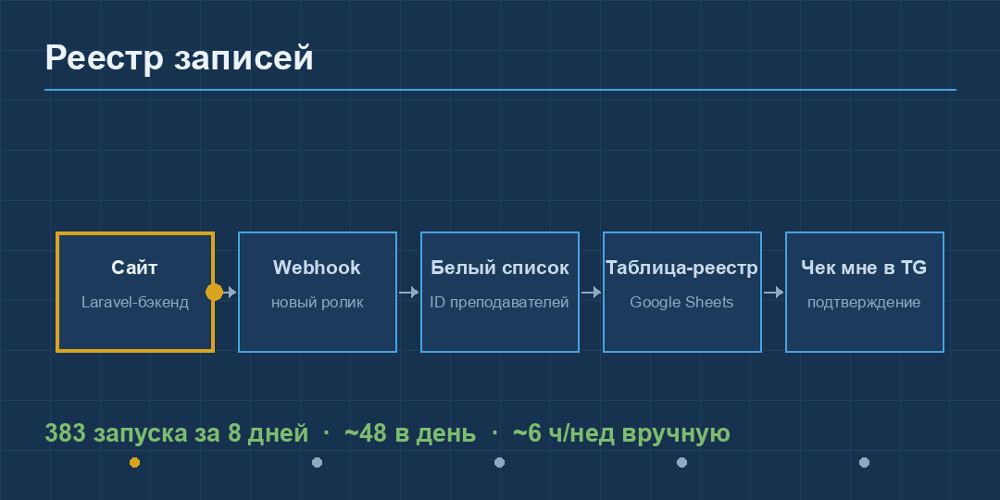
horse_1_registry.gif — пульс по конвейеру: сайт → webhook → белый список → таблица-реестр → чек в TG. 383/8 дн
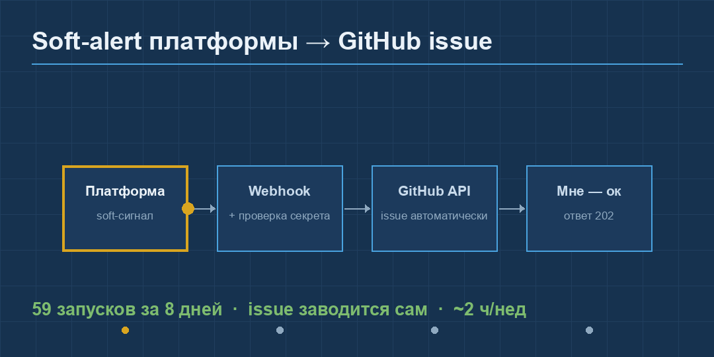
horse_2_softalert.gif — платформа → webhook+секрет → GitHub issue автоматически. 59/8 дн
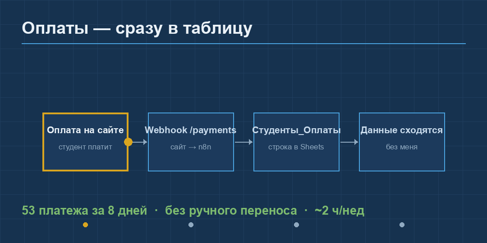
horse_3_payments.gif — оплата на сайте → /payments → строка в «Студенты_Оплаты». 53/8 дн
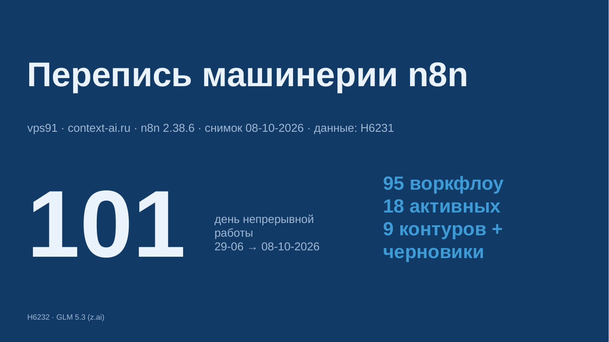
1 · Титул — 101 день непрерывной работы
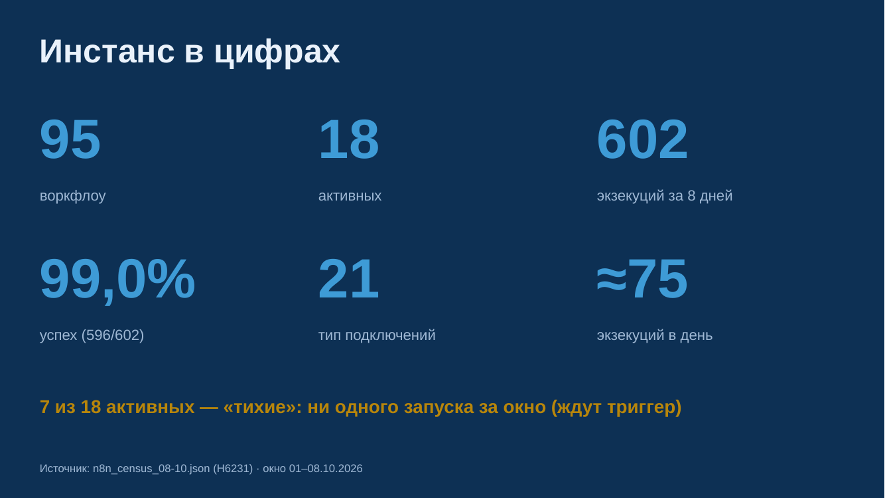
2 · Инстанс в цифрах — 95/18/602/99%/21
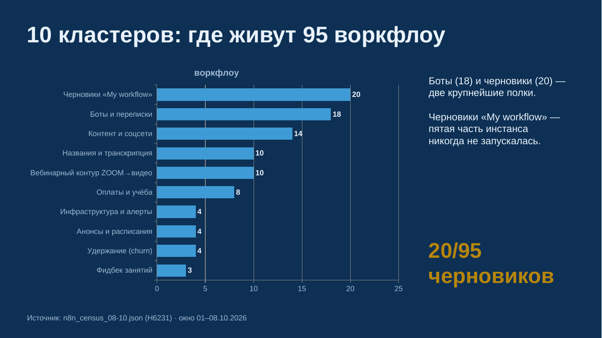
3 · 10 кластеров — где живут 95 воркфлоу
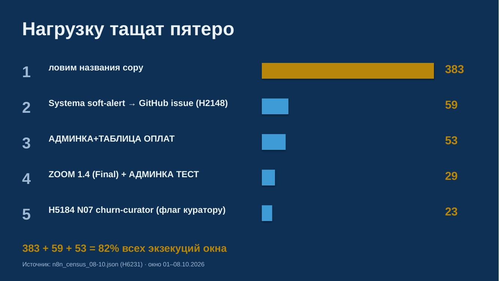
4 · Нагрузку тащат пятеро — топ-5 по экзекуциям
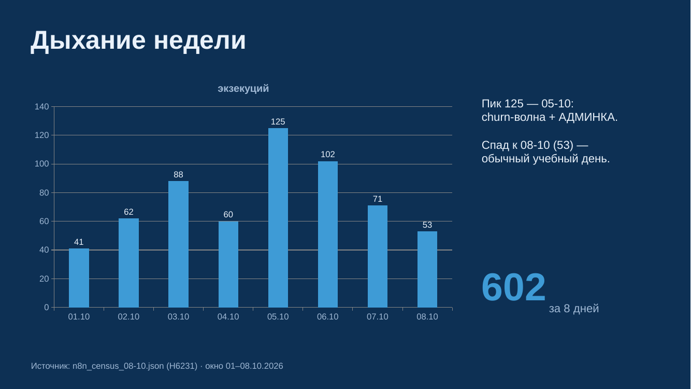
5 · Дыхание недели — 602 запуска по дням
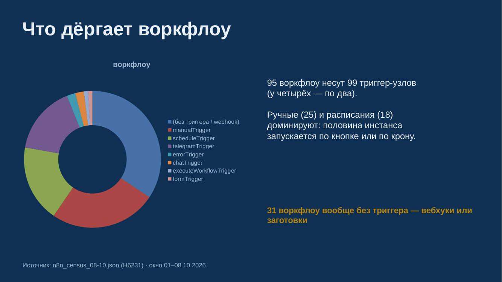
6 · Триггеры — что дёргает воркфлоу
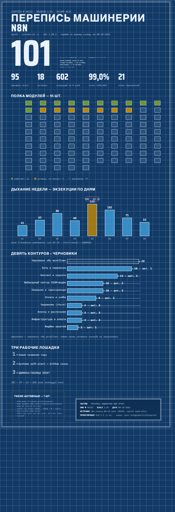
infographic.png — вертикальный постер-чертёж (1100×3200)

dashboard_full.png — полный дашборд одним листом (1280×12000)